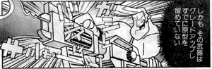

バブルス！後ろ後ろ！
(日記とか言うモノ)
「おつかれさま」＞自分に
土曜日はオフ会でした。
でも、待ち合わせ場所に向かう途中で仕事でトラブルがあったらしく、呼び出し。そりゃないよ。まあ、ちょいちょいってかたずけてオフのほうに戻りましたが。突然の遅刻もうしわけなかったっス。
トラブルはなんのことはない、何ごとかと思えば、CD-RじゃなくてCD-RWだったとか、winとMacの依存文字とか拡張子だとか諸々のトラブル。たのむよ、もう少しパソコンに詳しくなってくれや〜。確かにパソコンは道具にすぎないけど、プロとして仕事に使ってる道具なんだから、その道具には責任もとうや。
オフが終わったら帰宅じゃなくて、そのまま仕事先にってのがちょっと泣けてきた。ようやっと終わって帰ってきたとこ。おつかれ自分。
それはともかく、オフは楽しかったです。
豆魚雷につれていってもらいました。初めて行ったよ豆魚雷。この手のお店は見つけにくいとこにあるってのは定番なんでしょうか（笑）
あちこち寄っての今回の戦利品。
バブルス！後ろ後ろ！
戦利品はバブルスじゃなくて、カレのほう。カレのフィギュアって珍しいんじゃないでしょーか？
オフ会はショップめぐりの後、のんびりおしゃべりをしてたんですが、そこで「記憶だけでキャラを描いてみる」ってゲームが大変おもしろかったです。ほら、ぷっスマとかでやってるやつ。雑誌ではいとうせいこうとかがやってたやつ。メンバーがメンバーなんで、カートゥーンものがテーマだったんですが、これがなかなかムズいのよ。
とくにほら、ガールズとかグリムとかしかあんま描いてないじゃない。だから突然資料もなしに記憶だけで「ガーフィールド」を描けとかいわれて描けますか？記憶の中ではハッキリしているのに、いざ描くとなったらなかなか描けないものですよ。いやー、ひどかった。
タンタンはのりすけさんみたいになっちゃうし、スクービーはスクラッピーになるし、ブレインはもうなにがなにやら。かなりメタクソ。でもそれがおもしろかったりする。
しかし、そこはさすが黒イルカさんはいつもいい感じでしたな。さすがトゥーンマスター。だが弱点もあって、それは「頭身高い系」。黒イルカさんのUバードは個人的に最強にウケました（爆笑）
あと、意外（といっては失礼か）LOUさんもポイントをはずさない絵を描いて、感心しました。よく細かいとこまで覚えてんなぁ。
よく覚えているといえば、オーリーズアドベンチャー全部で何話あったっけ？って話になった時、タイトルからスラスラ出てくるLOUさんにはビックリと同時に・・・この人かなりヘンだ・・・とか思ったのは内緒だ。
いや、だってさ、うちのBBSのアドレスは
http://mbbs1g.clubcgi.jp/rental/sr2_bbss.cgi?1293sukapon
なんですが、これ「狙ってますね」とか言うんですよ彼は。分かった人〜。まずいないと思う。
この1293という数字。
これドラえもんの身長と体重なんですよ！！そんなの言われてワシも今気がついたよ！（ドラ：身長129.3cm,体重 129.3kg）そうか、うちの掲示板って隠れドラ板だったのか・・・・（笑）
オフの時にブリスターによったので、ようやっとパワパフの新刊が買えた。まあ、普通。
あと、TeenTitansGo!#4も買う。
こ、これは！！！凄すぎ！
良く言えば個性的なデフォルメ。悪く言えば・・・・
中学生が描いたかと思った！！！
いや、今どきの中学生はもっとうまいかも（webで見る限りでは・・）
なんちゅうか表紙に始まって全編つっこみまくりというか、脱力というか。あの表紙の女の子、てっきり新キャラだとばかり思ってたんですが、手にとって良く見たらスターファイヤーだったと。あんぐり。
今回の敵は「第7話 Switched」に出てきたパペットキング。でもって、それに操られたBBとサイボーグと戦ったり、「第2話 Sisters」に出てきたゴス男とレイヴィンがラブラブ（？）になったりと、話だけみると面白そうなんですが・・・作画がそのすべてを吹き飛ばす。
とりあえず、どのページでもいいんですが（笑）これなんかどーよ。

あぶなーい！ロビンが妖怪に喰われる〜〜！！！

と、思ったら、なんだロビンじゃなかった。ってオマエだれや〜〜！！！
というくらいくずれっぷりが原形とどめてません。＃３がものすごくマシに見えてきた。
こーいうのが「MANGA風」って言うんですか？？
ここまで凄いのもアメコミ買ってきて初めてかもしれない。だから、むしろ、ネタとして「買っとけ」と言いたい。ここまでくると、別の意味で爆笑ものです。純粋なファンにはかなりキツいですが・・
「絶対土曜は休むんじゃああぁぁぁぁ。」
と、強気で攻めて休みを勝ち取りました。やっぱり交渉は強気でいくにかぎる。「お願いしますよ・・・」なんて低姿勢ではダメだ。たとえ相手がどんなに偉い人であろうとも。ただそれでは殴り合いになるので、そっから少しずつ譲歩。結局、土曜の夜中の仕事するからってことでおちついた。（うーん・・・これはネゴシエーションに成功したといえるのだろうか・・・・？）
ToonZoonでのマクラッケンの新作情報を見た時、最初トップのアストロスーツの女の子がそれと勘違いしていた。あれはまた別の新作アニメ「Atomic
Betty」のことのようだった。宇宙の平和を守る女の子のお話のようだ。
マクラッケンのはこちら。なんだかサムライジャックにでも出てきそうなやつらだなあ。まだ全貌はハッキリしませんが、これから小出しに出てくるのかな？それとも直前まで秘密ってパターンでしょうか？
ああ、やっぱり始まるんですね。あのロー・ブローが。タイトル改め「Megas XLR」になってますが。パイロット版よりはマシになったかなあ・・・。これやるんだったら、むしろ「エルティングビルクラブへようこそ」をシリ−ズ化して欲しいもんです。
あと気になるのはやっぱりJustice League Unlimitedでしょうか。なんだかわからないが凄いタイトルだ。「屁のつっぱりはいらんですよ」級だな。
バットマンの新作は世界ががらっとかわっちゃったみたいだけど、こちらはまだまだ続くよブルース・ティム ワールド。ゲストスターとかが楽しみです。グリーンアローとかも出るのかね？アクアマンは偉そうでえばりんぼうなんで、もう出なくてもいいのに・・・
葬ったはずのお仕事がゾンビのごとく黄泉がえってきた・・・。
そりゃないよ〜。勘弁してください。わしゃなにがあっても今週の土日は休むけんの！！！！
あああ、テンションさがる〜。
そんななか、某氏からメールにてへんな情報が。
パフィーがCNでアニメ化
マジですか？TeenTitans人気でパフィーも人気！ってことでしょうか。
TTで日本語主題歌が流れたのも、もしやそのためのプロモーションですか？
なんかスゲエな。日本人が思ってるよりアメリカでは有名なのかもしれない・・・
ていうか、CNは「日本もの」にえらく力がはいっているような。ところで、これもいずれは日本CNで流れるんでしょうか（笑）
できればアダルトスイム枠でやって、スペースゴーストと共演してほしいです。
はっ！というより、SGC2Cに出演するかも！！！
こちらではアニメ化したパフィーのカットも（なんか若くなってる？？）
2004年2月25日 (水)修羅場も佳境に。なわけで、まだまだ予断はゆるされないものの、終わりが見えたってことで、精神的余裕が。
これこれ、これが大切なんだよ。精神的余裕。この余裕がないと、人間なにもできんものです。人にも優しくできないし。
しかし、毎回毎回打ち合わせやら締切やらに遅刻しまくりでしたな。しょ、しょうがないじゃないか〜。
すっかり「そういう人間」に見られるようになってしまった。（ほんとの時間より早めに告知されるしまつ）
でも、それはオレのせいじゃないよ！あんなムチャなスケジュールが悪いんじゃ。
違うんです！あれはダークサイドに洗脳されてたんですよ！
って言い訳したら、余計白い目でみられるようになった・・・
リンクにテクリさんのZIMサイトを追加。まってました。
イラストカットに感動。
レビューの文にも出てくるけど、「ふたりぼっちの宇宙戦争」って言葉はいいですなあ。初めてテクリさんとの会話で出てきた時には「それだよ！！！」って一人で感動したものです。SF系藤子マンガ好きにはZIMはいいと思うのよ。そんなわけで、ZIMのDVDにはますますもって期待が高まる。
DVDといえば、ATHF（アクア・ティーン・ハンガー・フォース）も最近激しく気になってる。これもDVD2巻目出るんだよなあ。くだらなくて、だらだらしてて、やる気がないアニメなうえにけっこうグロい。ピーも毎回連発してるし(笑) ゲームからしてグロい。このおっさん、毎回ひどい目にあう。首もげたり、腕もげたり、ミンチになったり・・・
このスケール感のむちゃくちゃなとこがこのスタッフならでは。The Brak Showもそうだった。
ああ、去年やったスペースゴーストがゲスト出演する話見たいなあ。
新作のアゴの細ーいバットマンは今年の秋からアメリカで始まるようだ。どうも新作の映画バットマンのからみらしい。まあ、旧作のバットマンも映画のからみだったし、そういうものなんだろう。
だからまたヴィランやらのデザインが大きくかわるみたい。
と、たまにはなんか書いとかないと停滞はクセになるからな。
あと少し、あと少しだ。負けるな自分。
とりあえず、仮眠でない睡眠が欲しい。
かぶりまくっていた仕事が次々と終わってゆく。逆に言えば、締切重なりすぎ。にもかかわらず、まだ終わらんのですよ。息を抜く間がないので、かなり精神がせっぱ詰まってきた。おかしくなる前にちょっと息抜きてえ。
月末にオフのおさそいがあるんだけど、微妙になってきた。でも、行きたいな。自分のためにも。
つい最近別のオフのお誘いを仕事の都合で断ったことがあって、かなり精神的にメゲた。行きたかったなあ。最近ゆっくりと食事するってこともなかったので、特に。おいしい食事は人を幸せにします。
ゆっくりweb回りもしてみたい。ちょっと調べたいこととかもあるし。でも、webでの調べものって、意外に時間とるんだよね。特に英語サイト回りの場合。
キムポといえば・・・
リージョン１のキムポのDVDってアマゾンで買えるのね。
リージョンの制限があって、日本で再生できないDVDは日本アマゾンでは販売しないものだとばかり思ってた。だからアマゾンで海外物を買う場合はビデオ・・・って思っていたが間違いのようだ。
ちょっと探ってみると、FuturamaやFamily
Guyも売ってるみたい。このへんのチョイスがよくわからない・・・
ZIMやJACK、TMNTのDVDが入ってくれたりすると激しく便利なんだが。
そういえば、吉野屋から牛丼がなくなったとかで、まぎわには客が殺到したとか。
まあ、いまさらなんだけど、あんまし牛丼には愛着ないからなあ。
けっこう嘆いてたりする人もいっぱいるみたいだけど、なんだかなあって感じです。別に吉野屋が潰れたわけでもないのに。同じような値段でかわりのものがあるのになんで嘆くのかと。「牛丼」が良かったってことですか。
私はむしろ大歓迎ですよ。大喜び。
だって、牛より豚のほうが好きなんだもの。
なか卯や松屋いっても牛丼以外をつも頼んでいる私としては、牛丼がなくなったおかげで豚メニューが増えて喜んでる。前から豚丼の店とかないかなあと思ってた。ラーメン屋とかいくとネギチャーシュー丼とかサブメニューであるじゃないですか。そーいうのもっと食べたかった。だから、店にとってはどうだか分からないけど、自分にとってはすげえ嬉しい状況。これからもずっとアメリカ牛輸入制限しまくってほしい。
そう思ってる人って他にいないのかなあ？
当然のように、だから家で作るカレーとかは豚肉オンリーだし、ビフテキよかポークソテーやトンカツやショウガ焼き。豚肉万歳。
米ディズニーサイトにあるキムポッシブルのゲームで遊んでみた。なんかいっぱいあります。
Sitch in Timeという新作のゲームがあるんですが、こんな女の子っていたっけかな〜？？？と思ったら、幼年期のキムでした。ツインテールだったのか！子供ドラッケンや子供モンキーフィストとかも。クリアしてゆくと、少女時代のキムに途中でスイッチ。今度はポニテール。なんかオモロイものを見た。
あとCard
Clashというのもやった。シーゴー姉さんのクイーン姿ステキ。
これって、日本でいうところの「戦争」ってゲーム？勝てばシーゴー姉さんが脱ぐんじゃないかと（脱衣マージャンじゃねーっつの）思って必死でやったけど、延々やっても決着がつかないので、途中でやめた。
今日はバレンタインデーですか。ジョニーってバレンタインデーが誕生日だったのね。スペシャルといっても、いつもといっしょ。
それにしても商業主義にまみれたこの習慣は最高ですな。バレンタインの時期になると嬉しくてたまりません。
ちまたではクソバレンタインだのなんだのとグチたれてる人もいっぱいいますが、アホですな。
女の子からチョコもらえる！なんて思うのは傲慢と怠惰以外のなにものでもありませんよ。それこそ踊らされてる。
違いますよ！これは（日本においては）チョコレートの祭典なんですよ！
この時期でしか見られないチョコとかメーカーとかがいっぱい出てて、ウハウハです。
いつもはめったに食えないデメルとかゴディバとかも試食しほうだい。幸せ〜。
去年はスイスのツェラーを買ったんですが、今年はベルギーのブリュイエールを購入。
この店もまた、ツェラー同様、日本に店舗や代理店をもたないお店。この時期にだけ！このバレンタインの時期だけ！やってくるのです！これを買わずしてナニ買うか。全品完全ハンドメイド。その日にできた分だけ空輸して送ってくる。
うめええええええ。きめ細かな味わいに、柔らかな甘み。まさにチョコの至宝。至福、至福。
こういうイベントがどんなに素晴らしいことなのか分かってない人が多すぎる。例えばですよ、これをチョコではなく、カートゥーンという言葉に置き換えてみればそれがどのくらい凄いことかわかるかと。
手作りカートゥーンとかプレゼントされたり、義理カートゥーンだとフィルメーションものばっかりだとか。イベントにあわせて世界中の日本未公開カートゥーンが市場にあふれる。スゲー。
さて、今晩はトップスのチョコケーキをアールグレイといっしょに楽しみますか。ああ、いい季節じゃ。
バットマンの新作、こんどはブルース・ティム絵ではないようなのが、残念。ジャッキーチェン・アドベンチャーとかやってた人がつくるんですか？んー、あれだ、やっぱりアゴがないのはさびしい。
コミックのほうのバットマンもちょっとした騒ぎに。なんか、ロビンが四代目にかわるみたい。今度のロビンは女の子？？？ ここにも、そういう波が・・・なんか違うよ。これはなんか違うよ。
それにしても、DCはバットマンに頼りすぎ。
まあ、もともとバットマンのヒットで名前をDCに変えたくらいのとこだからかもしんないけど、バットマンだらけっていうのもなあ。
てなわけで、去年のアメコミの販売ランキングとか見てみる。
2003
INDUSTRY STATS, TOP 100 COMICS AND GRAPHIC NOVELS, TOP 10 BOOKS
Top 100 Comicsのとこ見ると、もうバットマンだらけ。まあ、マーブルはX-menだらけなんだが・・・
出版社別に見るマーケットシェアを見ると、まさにアメコミはDCとマーブルにあらずばアメコミにあらずってくらいの凄い状況。IMAGEやDARK HORSEやCROSSGENやDREAMWAVEなどは中堅どころと言われるけど、この格差！
これがアメリカのコミック界の現状なのねん。
私の好きなONIやSLGなんてコンマ以下ですよ。amazon様がなければそれこそまともに読めない、入手できない。
ちょっと注目したいのが、TOKYOPOPとVIZ。ここは日本の漫画を翻訳して売ってるとこ。最近いい感じにのびてきてますな。特に再注文でののびっぷりがすさまじい。このReordersのランクが高いとこってのは「注文買い」でのものだから、ここが高いとこはマニア層のウケがいいとこだと分析したが、どうか。まあそもそも店頭にあまり並ばないからってのもあると思うけど・・・・
MANGAの進出はけっこう勢いがあって、とうとうDCまでもがMANGAを出すって言ってるし！
そのあたりTop 100 Graphic Novels（単行本）を見てみるとはっきりする。
トライガンが！ちょびっツが！ラブひなが！ベルセルクが！ どーんとランキングいり。
まあ、といっても私はSANDMANって今だに根強いんだなあ、とかJTHMやSQUEEって売れてるんだなあとかそっちに目がいってたりするんですがね。
LINK大量投入。
パワパフ以外がちょっと増えすぎたか？なんか溜まっていたものが一気にふきだした感じ。ブラウザのブックマークを全部のせそうな勢いだったので、さすがに途中で自制した。でも、自分メモとしてwebにおいとくと便利なんだもの。
MLaaTRの制作会社 Frederator
。なんかハイーパーリンクがぐちゃぐちゃなんですが、そのトラップを抜けるとジェニーの絵とかあったり、テーマソングのmp3があったりします。
おや？このテーマソングってTVで流れてるのと若干違うぞ。
私はけっこう平気でフレーム内のページとか直リンしたりしますが、それは直リンが悪いこととは思っていないからです。webサイトというのは家でも店でもないし。むしろ公開文書。しかしまあ、人によって考え方はいろいろなんで、それはそれで尊重する方針ではいますけどね。進入経路を特定したい場合は（必ずトップを通ってからじゃないと見れないとか）色々方法があるんで、いやな人はそういうのを試してみるのもいいかも。
良い悪いとかはあまり気にしないほうです。むしろ自分なりの信念や美学を貫こうとする姿勢はけっこう好きです。
ま、それはともかく。
それにしても、アニー賞・・・Voice Acting in an Animated Television Productionでジェニー役のJanice Kawayeさんが受賞できなかったのは、ちょっと悲しい。Jimmy Neutron って意外に評価が高いようですねえ。あちこちのサイトを見てもけっこう良い評判。むむむむ、でも3Dものはなあ。作品みてないうちからアレコレ言うのもなんですが、ピンとこないなあ。
3Dアニメといえば、新作のスパイダーマンも時期はわからないけど日本にくる気配。映画公開時期を狙って流しそうな感じです。すでに吹き替えの収録は終わってるらしいので。FOXか・・それともso-netチャンネルか？そーいや、so-netチェンネルでは今スポーンやってるね。話題にならないけど、こっそりとイロイロと海外カートゥーンも流してるし。
スパイダーマンではないですが、バットマンの新作が予定されている様子。若い頃のバットマンの話らしいです。そのせいか、なんかアゴが細くなってしまってる・・・
むう、こんなの公開されたらますます旧作の日本未公開分がどんどん遠ざかっていくようなそんな気配が・・・
ティーンエイジロボットの10月公開予定の話を聞くと、古くからのカートゥーンファンは「パワパフもうじき日本でやるよ！」って話を聞いてから１年近くおとさたななかった悪夢がよぎるようですね。今初めてその感覚がわかるようになりました。地上波放送に複雑な思いをいだくその感情に、やっとシンクロ。TeenTitansは地上波でもいいかなって思うところが微妙な愛の差でしょうか。
あまり早くから盛り上がると、当日が盛り下がる。なんてのを今日サンデー読んで学習。前倒し症候群。
と、いいつつも、ニヤニヤしながらこれ書いてたりします。
うわーーーーい、キャストはどんなんかな〜。うひうひうひ。主題歌はそのまんまかなぁ。それともキャットドックのように日本語化されるんかなあ。日本ニックはなぜか日本語のスタッフ＆キャストがクレジットされないけど、改善してほしいなあ。
関係ないけど、最近気になった記事。
著作権も担保に！なんだか、コンテンツ産業にたいしての救済政策らしいんですが、どうも気に入らない。もしかして、アニメやゲームの制作会社って倒産することを前提に話を進めてる？銀行ばかりがトクをする銀行優遇政策って気がするんですが、どーなんでしょう。制作会社はすべてを失うが、銀行は安泰と。融資じゃなくて投資をしろよ銀行。「ノーリスクハイリターンばかり求めてきたやつの顔は醜い！！」ｂｙアカギ
アクメツさん出番ですか？
よっぽど今の制作会社ってのは資金調達に苦労してるってことなんでしょうかね。ゲームはともかく、アニメはそれ以前に制作費をちゃんと上げてやるのが筋ってものじゃないかね。なんかいまだに十数年前の制作費のままだっていうし。
ま、実際の業務に関わってる人がどう思うのかはわかりませんけどね。素直に喜んでるのかな？
アニメといえば、ちらっと新作のエリア88を見たんですが。これはヒドイな・・・・作画も演出もCGの使い方も酷すぎる。昔やってたやつのほうが数段よかったと思うのは気のせいだろうか。
落ち着いたので、カメキチ堂さんの移転にともなうリンクの張り替えをおこなっていたところ・・・
なんじゃこりゃー！！！
ドメインが「teenage-robot.com」
やられた・・・そーいえば、しばらく前にドメインがどーのこうのってネタふってたっけ。今まで気が付きませんでしたよ。さすがとったもの勝ちのドメインの世界。ていうか、ニックは押さえておかなかったんですね。
ちなにみ、http://teenage-robot.com/ のトップアドレスでアクセスすると、おもろいものが。
キーボードの調子が悪いとか、書いた直後に、キーボード死亡。なーんにもキーをうけつけなくなってしましました。キーが打てないとこんなにも不便だったとは！マジなんにも出来ませんでした。
・・・・と、書いているということは、キーボード復活したんですね。これが。
いやあ、あせりましたよ。「しまった！こんな時のために音声入力システムを導入しておけばよかった！」なんてマジ思いましたよ。なにしろ、ノートですからね、そのまま修理の流れになるのも困りものだし。
仕事がつまりまくっていたので、ちょっとシャレにならんかったです。しかもほぼ同時に外付けHDも成仏。目の前真っ暗。
必死で、ノート分解してキーボードの配線チェックしたり、日本語JISキーボードに置換してみたり（私はUSキーボードに取り替えて使ってたんですよ。こっちのほうが便利だし）色々やったが、ダメ。大慌てで外付けキーボードを買いにいきました。で、つなげてみてこれで取りあえず大丈夫かとおもいきや、やっぱりダメ。なぜ？？？？
顔面蒼白になりながらもいろいろ試してみると、システムが立ち上がる前はキーが生きていることに気が付く。もしや、と思ってバックアップのシステムから立ち上げてみると、キーボード全然平気。
・・・・・ハードじゃなくて、ソフトの問題化よ。キーボード買って損した。
でも、こんな話聞いたこと無いし、初めてだったので、わけわからんかったですよ。なんか入力をコントロールするファイルでも壊れてたのかなあ？でもファイルチェックではなんにもひっかからなかったけどなあ。
まあ、いいや。
こんなときはMacで良かったと実感する瞬間。正常なシステムをコピペ。そこに必要なドライバとか初期設定とかフォントとかを、またもやコピペして・・再起動。はい、もとどおりっと。「いんすと〜〜るっ！」とかキバることなくコピペで済むんだもの、楽でいいわ。OS9までのMacってば。特別なソフトとか使わなくても複数のシステムを混在できるし。（イカレたシステムも部品取りように残したままでおけるし）あーラクチン。
でもまあ、そこまでいくのに丸一日かかったけど・・・
そのせいで翌日は仕事場で軟禁状態。今日やっと帰ってこれました。
HDのほうはどうも電源部分が壊れただけのようなので、ケースを買ってきて載せ替えて復活。パッケージものだったので、分解するには苦労しました。中身さえ取り出せればいいやってんでかなり乱暴に分解しちゃったけど。これからはバルクのHDにケースの組み合わせがベストかも、なんて思ったり。だってねえ、HDのメーカーに問い合わせたら「修理しますが、中のHDは初期化させていただきます」とかぬかすんですよ。それじゃ意味ねーっつうの。だから自力で載せ替え。HDの保証なんて意味ねーよ。ったく。
でもいいや。帰ってきたら転げ回るほど嬉しいニュースがあったことだし。
リアルで転げ回りました。
ありがとうニコロデオン様。
ついでにInvader ZIMもやってくれたら、一生ついてゆきます。
ただ、こいつは実際問題ちょっと難しいだろうなあ・・・・・
ところで、ジェニーといえば、massangeanaさんとこのキャプチャー紹介ページが、ひっそりと更新されてた。1月の分は録りのがしたということのなので、タイトルだけだが、「専用アイキャッチ 」が追加。これはそのまんま日本公開時のときにも使われるかもしれん。
アニー賞まだーぁ？
バットマンだけでなく、今までスペシャルしかパッケージされてないビヨンドも予定だけはあるみたい。
ああ、なんかキーボードの調子がヘンです。
反応しないキーとか機能キーが押されたままになったりとか。マウスはイカれてもなんとかなるけど、キーボードはちょっと困る。いや、かなり困る。これ書くにのすげえ時間かかりました。
マジまいったな・・・
昨日、CNの作品はパッケージ化されないのか〜！とかわめいていたら、サムライジャックのDVD-BOXが！
他にも調べてみると、バットマンもDVD化の予定がありますね。ジョニークエストまで・・・
でも日本ではなんの動きもみられない・・・まあ仕方がないか。どーせ日本ワーナーはハリポタで手一杯なんでしょ。ぐすん。
さて、いよいよアニー賞の発表だが、サイトのほうはいつ頃更新されるんだろうな。気になります。
米アニメ界のアカデミー賞と言われるアニー賞ですが、日本での知名度はいまひとつ。「千と千尋の神隠
し」が受賞したときにちょこっとその名が出たくらいでしょうかね。そもそも、これに相当するような賞って日本のはあるんだろうか？全然聞いたことないです。もしあったとしても、アニー賞以上に知名度が低いことになる。
漫画にも、SFにも、ミステリにもちゃんとあるというのに。それに相当するのがオタク大賞だったらちょと悲しい
これがアニメ大国日本の現実かよ・・・
良いしらせと悪いしらせがある。どっちを先にききたいか？
漫画とか小説とかドラマとかで、けっこうよく使われる言い回し。私はこれけっこう好きです。
どっちを先に聞きたいか？
良い方を先に聞くと、あとでガッカリするので、悪い方から聞きますか？
私は先に良いしらせが聞きたいタイプです。
なぜかというと、そのほうが「オチ」があるので面白いから。
いい知らせを聞いたあとで、「なんじゃそりゃ〜！」とわめけるほうがなんかスッキリするし。
そして出来ればこの「良い」と「悪い」は並列なほうがいい。うまくない作家とかだと、たまに流れがあったりする。そーいうのはいただけない。
例えて言うと
よい知らせ「パワパフの新作が始まったらしい」
悪い知らせ「でも、日本じゃ公開の見込みはないらしい」
これはまず、良い知らせありきなんで、こういうのは、デキがよくないってことです。
で、なにが言いたいかというとですね。今日仕事で
よい知らせ「締切がのびました」
悪い知らせ「その分、分量が倍に増えました」
えええええっと、結局、まだまだこの苦しみが続くってコトかよ！総合的には悪いしらせ。ちきしょー！でき良くないよ！ま、現実はこんなものです。明日は早いからもう寝よう。
で、関係ないですが、Fairly OddparentsとJimmy NeutronのDVDが発売されたみたい。CNのカートゥーンカートゥーンズたちと違って、ニックの新世代はパッケージ化が早いですね。つーか、今時CNがおかしいともいえる。このペースを見ると、もしかしたらティーンエイジロボットは日本に来る前に、DVDやビデオでお目にかかれるかもしれませんな。
とりあえず、明日というか今日をしのげば、なんとか・・・。
しかし、これだけムチャやってもいっこうに風邪を引かないのはなんでだろ。
いや、いいことなんですがね。
にしても、せっぱつまった時の集中力というのは凄いものだ。
逆にテンション上がらないときや集中力が高まらず散漫になってるときはヒドイものだ。30分で終わるものが3時間かかったりする。だらだらやるんだったら、時間削ってでも全力で休むってのも大事だよなあ。
注文してたブツがようやく入荷しましたので、明日発送しますと、紀伊国屋からメール。
ようやっとかよ〜。と、思ったらそのブツはどうやら店頭でも売ってたらしいことが最近わかった。（しくじったか）しかも、狙ってた内容のものはないっぽい。届く前からガックリ。まあ、妖精さんも気になってたからいいか。
今日は節分ですか。元をたどれば年末の行事。さていよいよ、もうじき本当の新年がやってくるわけですな。
てなわけで、ここらで年末休みが欲しいとこです。
つーかさあ、なにもそろいもそろって同じ締切で仕事発注することないじゃない。世の中不思議なもので、重なる時はホント不思議なくらい重なる。寒いからでしょうか、最近徹夜がキツくて・・・
あ、そういえば、アニメエキスポってよく考えたら海外の「日本のアニメ大好き」祭りなので、「日本のアニメ」ばかりになっちゃうのは当然の成り行きだったような。では、なぜフィル・モイは来日したんだろうなあ？
日本に遊びにくるための口実だったりして。
関係ないけど、MacのIEEE1394はイマイチ信頼性が低いのが困りものです。自分トコが推奨してる規格なのにぃ。デイジーチェーンなんかした日にゃ、気苦労ばかりが溜まります。
今日はうれし泣きと悲し泣き。
うれし泣きはお絵かき掲示板に、すごく会いたかった人が来てくれてコト。もしかして、ちょくちょく見に来てくれてたりしたのかな。だったら嬉しいな。
そして・・・悲し泣きは・・・
言うまでもなく、ニュースのとこに書いたコト・・
一応その事実を知った経緯を書いておこう。
ん〜とですね、ワタクシ、ヘルシング目当てでYOUNG
KING OURSとか毎号読んでるわけですよ。
とりあえすヘルシングは堪能して、他のも読んでると、目に付いたのが「コミックマスターJ」
こ、これはっ！

好きよ愛する者見捨てぬ男だメイジャーマン!
ってメイジャーマン！！！！！
余湖裕輝は前からクサイと思ってたんですよ。アクメツに登場する「アーメツくん」はパワパフっぽいデザインだったので。デフォルメチビキャラにすると似てくるものなのかな〜でもな〜。なんて思ってました。でもイマイチ確証はもてなかったのですが、これで決定！間違いなし！
しかも、こんなマイナーキャラなんて・・ホンモノだ！
で、まあそれはそれで感動して、他のも読み進めると。
その中に「OURS アニメ生活」ってコラムがあるんですよね。そこで1月16〜18日に池袋でやってた「アニメエキスポ東京（小林治）」のレポート記事が載ってたんですよ。どうやらこのイベントは、コミケのようなものではなく、アメリカのコンベンションの日本開催ってことらしい。ちょっと興味もったので、読み進めてみる。
「斯く言う自分も、アメコミ版『パワーパフガールズ』の作者にサイン貰っちゃったし」
（゜д゜;≡;゜д゜）ななな、今なんとおっしゃいましたか！
フィル・モイですか！クックさんですか！ ていうかなんじゃそりゃ〜〜〜！
webであわてて調べると、スケジュールのとこに間違いなく「フィルモイ」の名が！
なんてこった・・・
何故事前に知り得なかったのか・・パワパフの神は何故私を見捨てたのか・・・・
その時自分がナニをしていたかを日記を読み返してみると・・・
九州いってました・・・・_|￣|○どのみちダメじゃん。
フィルモイが東京に来た時には入れ違いで、ワシは九州・・。しかも、ジョイフルのカレンダーゲットして喜んでる始末。
それか！それなんだね！等価交換の原則！人は失うものなくして得ることはないと、そういうことですか！ジョイフルカレンダーを運良くゲットできたのは運じゃなくて、フィルモイのサインが代償だったんですね！（錯乱中）
・・・・しかし、webでAX2004の情報を見る限り、普通だったら絶対チェックなんかしてなかったと思う。ゲストにしてもイベントにしても、ハッキリ言って自分にとっては興味わかなかったもの。まあ、日本のアニメ好きの外人さんは聖地での開催ってこともあって嬉しいんだと思うが・・・
コミコンでやったみたいにバットウーマン先行公開とか、TeenTitans日本先行公開とか、日本未公開のカートゥーンあれこれとかだったら絶対チェックしてたはずなのに。今後もこういう感じなんでしょうか？
ああせめて、東北新社（CNほかカートゥーンの日本語化をよくやってくださるとこ）の海外作品の吹き替え裏話とか、テレコムアニメーション（タイニーとかバットマンとかCNのキャッチとかの制作にあたってるとこ）が語る日米合作話とか、そーいうのはないんですか！ゲストにジョンKとかヴァスケス呼んで、ニックへの悪口言わせるとかの企画でも・・・・せっかくのコンベンションなんだからさあ。 日本のアニメのイベントなら日本の企画で普通にやってよ〜〜！
うわーーーーーん。
プリズナーNO.6 ｷﾀ━━━━━━(ﾟ∀ﾟ)━━━━━━ !!!!
しかもデジタルリマスター完全版！ 突然字幕になるとこが、いままでカットされてた部分なんですな！
（ナイトライダーもこのくらいの度量と柔軟性をもってほしかったね）CSに入ってて良かったと思った瞬間。
こいつのおかげで今だに「巨大な白い風船」がトラウマ。
でもって、TMNTの旧作版のDVD ｷﾀ━━━━━━(ﾟ∀ﾟ)━━━━━━ !!!!
・・・でもダメなんだよ、英語版じゃダメなんだよ・・・SAKIじゃなくてサワキちゃんでなけば！テレ東吹き替え版じゃなきゃ、ダメなんだよ・・・（オリジナルではシュレッダーの名はSAKIと呼ばれてる）
TMNTは日本でビデオも出てるけど、これは吹き替え違うんだよなあ。
もう、なにやっちょるんですか！日本は。ぜひぜひ、予告編まで収録したTMNTのテレ東版を・・・
もしくは、CN様〜。トランスフォーマーのついででいいから、やってくれませんかねえ。
旧作と新作のセットでFOXでいいから。
そういえば、この間新作のスパイダーマンのアニメをみたんですがね、むうう、なんと言っていいやら。
全編トゥーンレンダの３Ｄアニメ。凄いといえば凄いんだけど、なんかゲームみたい。ていうかアクション・シムピープル。
しかしそこはさすが、3Dがお得意なお国だけあって、表情とか演出が細かくて、それなりに面白かった。ノリ的にはバットマン・ビヨンドにかなり近いんだけど、はるかに暗い・・・市民に煙たがれるスパイダーマン・・・ヒーローなんかやめる・・とか言い出したりするし。
しかし、やつらの3Dアニメにかける気合いは凄いね。本気だよ。でも、私はやっぱり日本人なんで2Dアニメが好きなんですがね。